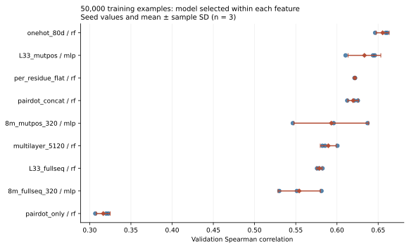
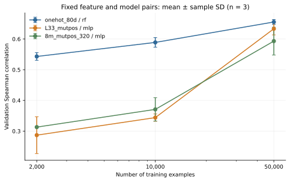
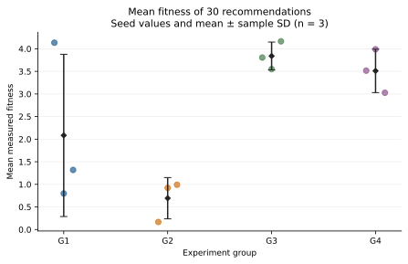
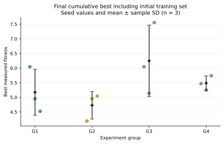
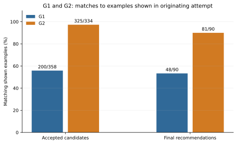

GB1特征表示、候选设计与工具交互研究（附跨蛋白扩展验证） · 2026-11-15
目标是在 GB1 四个位点的实测变体库中，通过已知测量、适应度预测和语言模型设计提出下一轮待测变体。研究包含预测器离线比较、三轮虚拟定向进化、知识辅助实验以及反馈与候选来源检查。主体结果来自同一蛋白任务；第5节附跨蛋白扩展验证。
采用 Wu 等（2016）的 Supplementary file 1，共149,361条唯一变体，覆盖20⁴种四位点组合的93.35%；29,477条fitness为0。fitness为相对野生型归一化的结合筛选富集分数，WT=1，越大越好，未作对数变换。S2插补值不用于虚拟测量。
实验参考域长56 aa，可变位置为39、40、41、54，参考残基依次为VDGV。完整参考序列：
MQYKLILNGKTLKGETTTEAVDAATAEKVFKQYANDNGVDGEWTYDDATKTFTVTE
| 实验部分 | 数据设置 | 统计单位 |
|---|---|---|
| 在线研究（种子11/22/33） | 初始训练2,000；验证1,000；保留测试5,000；候选池141,361 | 每种子一条完整三轮轨迹 |
| 预测器243组比较 | 固定验证集2,000；从其余数据抽取2,000／10,000／50,000条训练 | 三个训练抽样及模型随机种子；共用验证集 |
| 反馈单步预试 | 四个新状态，每状态每条件三次生成；同批候选回放两种选择器 | 先状态内平均，再四状态等权 |
各轮只用初始训练和本方法此前获得的反馈拟合预测器。模型提出候选后检查格式、资格、重复和预算；预测分与实测分分开保存。固定最终推荐后才查询所选变体的测量值。保留测试集用于完成轨迹后的预测评价。
| 组别 | 预测器 | 候选设计与选择 |
|---|---|---|
| G1 | one-hot＋RF，沿用各种子验证选择 | 历史Prompt v1；程序按预测分选Top-10 |
| G2 | ESM-2 L33均值特征＋Ridge（α=1） | Prompt v1；程序按预测分选Top-10 |
| G3 | 与G1相同的RF规格 | Tool-Calling；模型可逐次评分并提交 |
| G4 | 与G2相同的ESM-2 Ridge规格 | Tool-Calling；模型可逐次评分并提交 |
每组每种子三轮，每轮推荐10条，候选评分上限40。G1复用9个历史轮次，G2–G4新增27轮。Prompt最多2次生成调用／轮；Tool-Calling最多15次调用／轮并设累计token停止阈值。提示、交互和计算预算的差异共同构成流程条件，四组差值按描述性结果解释。
离线比较9种特征×3种回归器×3种训练数量×3种种子，共243次拟合。RF为100棵树、max_features=sqrt；Ridge使用StandardScaler和α=10；MLP使用StandardScaler、256/64隐藏层、权重衰减α=10⁻⁴及早停。ESM-2参数冻结。验证Spearman用于排序评价，MSE用于预测误差评价。

在本配置集合中，one-hot＋RF的验证Spearman最高，为0.6554；L33突变位点特征＋MLP为0.6333。逐位点拼接RF加入六个点积特征后，均值变化为-0.0021。243组拟合完整刻画了特征、回归器与训练规模三者的选型面。

L33＋MLP从2,000条训练时的0.2869变为50,000条时的0.6333。8M＋MLP在2,000和10,000条件下的均值高于650M＋MLP，在50,000条件下低于后者：小训练量下8M即占优，规模收益集中在大样本端。在线G2/G4使用α=1的Ridge，与本节50,000训练的MLP设置分别解读。
每条轨迹的推荐质量定义为30条新增推荐实测fitness的均值，再对三个种子等权汇总。累计最佳包括初始已知测量，按定义单调不减。表中±为样本标准差（ddof=1），每条件n=3；连续轮次作为同一轨迹的相关观测。
| 组别 | 新增推荐均值±SD | 累计最佳均值±SD |
|---|---|---|
| G1 RF＋Prompt v1 | 2.0840 ± 1.7949 | 5.1732 ± 0.7845 |
| G2 ESM-2 Ridge＋Prompt v1 | 0.6939 ± 0.4572 | 4.7274 ± 0.4692 |
| G3 RF＋Tool-Calling | 3.8405 ± 0.3091 | 6.2475 ± 1.2206 |
| G4 ESM-2 Ridge＋Tool-Calling | 3.5110 ± 0.4809 | 5.4850 ± 0.2451 |


| 策略 | 推荐均值 | 新增最高值均值 | 三种子总预测数 |
|---|---|---|---|
| 均匀随机 | 0.1397 | 2.2219 | 0 |
| 全池冻结RF | 3.2492 | 6.3909 | 1272159 |
| 全池更新RF | 3.2022 | 6.6301 | 1272159 |
此项对照沿用在线研究相同的三个划分，各轨迹30次测量查询，合计每策略90次；全池模型每轮对剩余候选全部预测（总预测数见上表）。Tool-Calling组以326和315次评分的实际开销，在相同测量预算下取得超过全池对照的推荐均值（新增最高值均值为其92%–95%）——预算受限场景的实用性直接体现于此。
历史v1在每轮40个候选评分上限下，随机、模型排序、基础Agent及知识辅助Agent的新增推荐均值分别为0.1741、0.3861、2.0840、1.5146。随机及模型方法从随机候选库选择，Agent可设计候选。知识规则包括理化性质、替换限制及组合不确定性，并保留规则来源；该次知识辅助均值低于基础Agent，知识增强效果以v1内对照呈现。
候选来源按条目统计：若候选ID出现在其被接受的那次请求所展示的无标签示例中，记为示例匹配。跨轮或跨轨迹重复出现的同一ID仍分别计为条目。此定义描述记录一致性。

G2有325/334个接受候选、81/90条最终推荐匹配预填示例；G1分别为200/358和48/90。候选生成与评分共同影响在线结果。离线预测器比较固定了同一训练／验证条件，适合单独评价各预测配置的表现。
附加提示探索A的保存摘要共50个生成条目（各状态18、12、20），在明确禁止复制示例的提示下，摘要报告均未命中其检查集合（初始训练Top-10；提示示例取其中Top-5并附测量值；最多20个候选，StandardScaler＋Ridge（α=10））。该结果与G2的高示例匹配率对照表明：候选复制对提示呈现高度敏感，可通过提示设计避免。
标记测试B记录了2个工具事件，标签与所调用工具一致，验证了调用目的标签的完整采集路径；效果与自主性统计以G3/G4完整轮次记录为准。
G3和G4主动提交分别为5/9轮和6/9轮；其余轮次因评分额度耗尽由程序按预测分排序提交。G3的19次评分调用完整覆盖多轮候选设计、无效候选补批与额度管理行为，全过程日志逐条留存。
独立的四状态反馈单步预试完成24个生成条件及44次调用：固定初始预测器时，展示新测量上下文的状态等权差为-0.2060；排除一次服务端截断条件后的敏感性结果为+0.1761。两个方向均不稳固，该预试的贡献在于建立了可行的单步反馈测量协议并给出变异量级。
| 条件 | 变体 | 预测fitness | 实测fitness |
|---|---|---|---|
| G3／种子33／第3轮 | ANCA | 4.7190 | 7.5569 |
| G3／种子33／第3轮 | CNCA | 4.7190 | 0.6127 |
第一行为G3/G4本次新增推荐中的最高实测变体，第二行为预测高估最大的推荐。预测误差描述模型对该组合背景的估计偏差；现有fitness测量不能单独区分表达、折叠、结合及技术因素。最高实测变体的56 aa序列：
MQYKLILNGKTLKGETTTEAVDAATAEKVFKQYANDNGANCEWTYDDATKTFTATE
本研究的三个主要结果：其一，243组系统消融给出特征×回归器×训练规模的完整选型面，本配置集合中最优为one-hot＋RF，且"ESM特征适配MLP头"的排序在三个跨蛋白数据集上重现；其二，在评分器相同的成对条件下（G1→G3、G2→G4），Tool-Calling组的新增推荐均值与累计最佳均高于对应Prompt组（成对差异同时包含提示呈现与交互方式变化，第3节表）；其三，四个真实数据集上验证集驱动的自动选型四次均在参评候选池内选中排序最高的配置——替换库one-hot系、indel库ESM-2嵌入（0.7552）。框架以protevo开源，换数据文件即可复用预测器配置与工具层流程。
后续工作沿本报告协议推进：固定数据状态与预算的独立重复、示例展示与轮内交互的分别操纵、跨蛋白设定下的完整多轮语言模型循环（当前止于预测器与工具层）。全部请求、响应、资格检查与选后测量均已留存，支持上述扩展的直接复现。
工作台的完整三轮语言模型循环当前以GB1为实证范围，参考序列需显式核对。结构视图可使用1PGA链A作为参考，但其第2位与实验参考不同。连接真实实验平台时，需要明确样品编号、测量单位、质量控制、提交回执和人工审核，当前结果均为既有测量上的虚拟迭代。
在上述GB1研究之外，框架完成了蛋白无关化改造：变体表示支持四种格式（全长序列、突变串、V39D式替换记谱（含ProteinGym冒号分隔）、HGVS子集indel记谱（缺失/插入/重复））；Agent工具校验、工具描述、系统提示与轮次开场白全部由蛋白配置对象派生；另增按需ESM-2嵌入服务与fitness方向归一化。以下扩展均为换数据文件零代码改动的复测，验证止于预测器选型与工具层接线；语言模型完整三轮循环仍仅在GB1上运行。
| 数据集 | 变体数 | 库结构 | 自动选型 | 验证Spearman |
|---|---|---|---|---|
| GB1（Wu 2016） | 149,361 | 4位点替换枚举 | one-hot＋RF | 0.6554（50,000训练） |
| GFP（Sarkisyan 2016） | 51,714 | 233位点替换 | one-hot＋Ridge | 0.8652 |
| 泛素RL40A（Roscoe 2014） | 1,380 | 75位点单替换 | one-hot＋RF | 0.7849 |
| TEM-1 BLAT（Gonzalez 2019） | 4,751 | 单点indel | ESM-2嵌入＋MLP | 0.7552 |
替换库三项中one-hot系特征均胜出（GFP与泛素数据上ESM-2嵌入的最优头esm2_mlp分别为0.7765与0.6357，仍参选落选）；TEM-1单点indel库上固定位置编码失效，氨基酸组分＋长度基线仅0.0323，ESM-2嵌入胜出——嵌入之上的回归头由验证集在Ridge（0.6568）与MLP（0.7552）之间选定MLP，与243组消融中MLP为ESM特征适配头的排序一致。四种库结构的自动选型均与验证集排序一致；替换库上one-hot系的竞争优势与FLIP等基准在位点特异小样本库上的发现一致，ESM头选择为本项目三数据集观察（外部对照见docs/knowledge_calibration.md）；候选池按先验给出推荐集，全部可行组合可经参数放开，选择权始终在验证集。枚举型均匀库的野生型众数推断不可靠（GB1全量众数为WLVS而非VDGV），系统以众数优势比护栏标记不可靠并建议显式提供参考序列。indel记谱经TEM-1全部4,751条变体的解析、校验与往返重构一致性验证；该数据集记谱按HGVS 3′规则自全长序列差分推导（ProteinGym indels不提供记谱列）。
代码整理为通用框架发布包protevo（v0.2.0，MIT）：包内测试483项通过、0失败、16项自动跳过（GPU门控与可选数据依赖）。发布前对代码、提示与路径的数据集钉死审查见包内docs/release_audit.md：通用层零钉死，GB1仅存于按可复现性要求冻结的实验设施层。
图表和表格由已保存CSV／JSON生成。图表入口：tools/build_report_v2_figures.py；本报告入口：tools/build_final_report_v2.py。预测器离线入口：evaluate_all_variants.py；四组运行入口：run_factorial.py；跨蛋白复测入口：run_cross_protein.py（支持任意数据集CSV）。开箱即用入口：python -m protevo.evolve 数据.csv（一行跑完整多轮虚拟进化，CSV全量fitness作查表回填oracle）；环境自检与LLM辅助配置：python -m protevo.setup_assistant --doctor（设备自适应auto，CUDA/ROCm/CPU三平台，ESM-2 checkpoint自动获取，已配置设备幂等短路）。预测器候选池默认为先验推荐集，可经predictor_pool="full"或extra_candidates放开全部表示可行组合；变体格式、护栏阈值、验证划分比例与模型超参均可经参数覆盖。evolve默认轮间固定预测器，retrain_each_round=True时切换为本报告第1节所述的每轮以累计反馈重拟合协议。跨蛋白数据出处见data/external/*/meta.json（ProteinGym v1.3）。原始API调用需要项目模型配置；数值重算和图表生成不需要新增模型请求。
数据与论文：Wu et al. (2016), Adaptation in protein fitness landscapes is facilitated by indirect paths, eLife 5:e16965, https://doi.org/10.7554/eLife.16965；ESM-2：Lin et al. (2023), Evolutionary-scale prediction of atomic-level protein structure with a language model, Science, https://doi.org/10.1126/science.ade2574；FLIP基准：Dallago et al. (2021), FLIP: Benchmark tasks in fitness landscape inference for proteins, NeurIPS Datasets and Benchmarks, https://www.biorxiv.org/content/10.1101/2021.11.09.467890v1；ProteinGym：Notin et al. (2023), ProteinGym: Large-Scale Benchmarks for Protein Fitness Prediction and Design, NeurIPS Datasets and Benchmarks, https://openreview.net/forum?id=URoZHqAohf；方法对比：Schmirler et al. (2024), Fine-tuning protein language models boosts predictions across diverse tasks, Nature Communications 15:7407, https://www.nature.com/articles/s41467-024-51844-2；软件：scikit-learn、SciPy、Matplotlib、OpenAI API、DeepSeek Harness。
AI辅助声明：语言模型用于候选设计、实现协助、材料整理与检查；在线实验的模型身份以保存的调用记录为准。预测分、模型生成的理由及工具目的标签均与已有实测结果分开呈现。